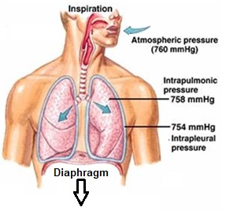
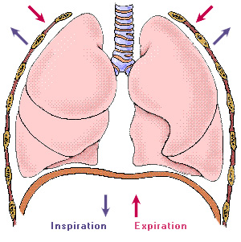
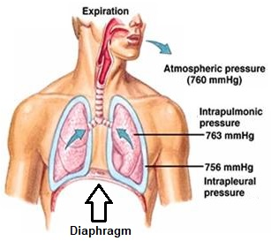
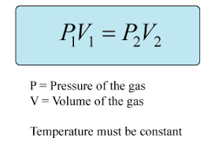

- Mechanics of Breathing (Ventilation)
- Ventilation occurs as a result of pressure gradients induced by changes in lung volume.
- During inspiration:
- Contraction of inspiratory muscles chest vol pleural vol pleural P lung vol alveolar P
- atmospheric P > alveolar P generation of pressure gradient air to flows into the lung
- Energy -> muscular contraction -> works against the elastic recoil forces of the lung.
- During (passive) expiration:
- lung vol alveolar pressure above atmosphere (alveolar P > atmospheric P) air goes out
- Elastic recoil forces of the lung contribute to change in pressure gradient.
